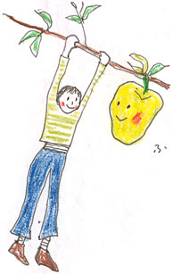
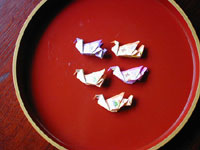

|
■「落ちるもんか」
2週間ぶりに電車に乗った。といっても、2週間という間隔があくのはめずらしいことではなく、日頃私が電車に乗るのはそんな頻度。家にこもりがちに仕事をしているので、たまに電車に乗ると、そこはもう、なんといったらいいのか、魑魅魍魎の世界だ。いやいや、そんなことを平気で言う君こそが妖怪だよ、と言われるかもしれないが。
9月のはじめだった。朝と昼の狭間の時間帯だということもあって、西武池袋線の上りは比較的すいていた。乗りこんですぐに「はっ」と気づいたことがある。座席のひとも、つり革のひとも、一様にどんよりして見えるのだ。目がおかしいのか、と思った。たしかに老眼は順調にすすんでいるが、ひとの姿がぼやけて見えることはない。どんよりして見えたのは、ひとびとが疲れた様子だったかららしい。誰もがあくびを噛みころしたような、けだるい感じを発している。
今夏、東京は暑かった。8月の記録だけを見るとさほどではないが、6月の梅雨のただなかから熱帯夜がはじまり、7月に入ると、さらに尋常でない暑さが襲いかかってきた。もうひと雨かふた雨きてから梅雨明けを宣言しようと考えたのか、気象庁はなかなか夏のはじまりを告げず、告げないまま猛暑に突入したかたちだった。ひどく遅れた言い訳のような梅雨明け宣言には、誰も反応しなかった。すでに暑くて暑くてそれどころではなかったから。
暑さに耐えるのに体力、気力をつかって、東京のひとは相当にくたびれたんだなあ、そう思いながら電車がごとんごとんと揺れるに任せて、自分も揺れていると、駅。
大泉学園。背の高い女のひとが乗りこんできた。うわっ、きれいなひと。年の頃は40歳前後だろうか。肩までのばした栗色の髪をかき上げながら、私のまん前にすわった。誰かに似ている、誰だろう……。
「ジュリア・ロバーツ」
そう、ジュリア・ロバーツに肉をつけて、ほんの少し東洋の血を混ぜた感じ。たいそう美しいが、個性的で、ともすればファニイフェイスなどと評されないとも限らないジュリア・ロバーツに対して、目の前の彼女は正統派美人。そんな彼女もどこかどんよりして見える。全体を隈なく観察すると、どんよりの原因はどうも素足にあるようだ。まぶしいほど白い脛は、虫さされの跡だらけ。この夏の蚊やぶよの多かった、苦しい一面を物語っている。そういう脚を隠すゆとりがないか、あるいは自分の脚を見ることすら忘れているのか、どちらにしてももの哀しさが漂う。眺めるともなく眺めていると、彼女は膝の上にでんと置いたルイ・ヴィトンのバッグのなかから「運動会」という文字の入った栞を取り出した。そうしてふーっと大きなため息をついたのだ。運動会の準備の手伝いにでも出かけていくのだろうか。
（ジュリア・ロバーツ 子の運動会にかり出され）
ふと、今度は扉ひとつおいた向こうの座席に、ねぼけ顔の若い女の子がすわっているのが目に入った。バッグからかじりかけの菓子パンをとり出して、むしゃむしゃやったあと、両手を合わせて、パンパンとはたくと、今度は小袋をひっぱり出した。小袋は化粧ポーチだったらしい。なかからチューブを選びとって、てのひらに数センチしぼり出した。それをていねいに顔にのばしていく。
（ひゃー、下地クリームだあ）
新聞でも読み、ひとにも聞いたことのある「電車内身支度」がはじまっているのね。さっきのは、朝ごはん？ もしかしたら、私がジュリア・ロバーツに見とれている間に、そこでパジャマから、ワンピースに着替えたの？ （まさかね）
とあわてている私を尻目に、彼女はパウダーをはたき、眉を描いて、右目のまぶたを茶色とも紫ともつかぬ色に染めている。
いたたまれずに視線を泳がせていると、身支度女の向かい側に腰をおろしたお姉さんと、おじさんが、目を大きく見開いているのに出くわした。「開いた口も目もふさがらない」という状況。誰も注意しないのだろうか、と思いかけたが、それなら私にはできるのか。注意するとしたらどう言うか。想像を重ねるうちに心もとない気持ちになる。
「ここ、電車のなかでしょ。お化粧は遠慮したら？」
「どうして、電車のなかで化粧しちゃあいけないのォ？」
と切り返されたら、答えようがない。
「どうしてって、恥かしくないの？」
「ぜーんぜーん」
こんなやりとりの末、だらしなくも黙ってしまう自分の姿が見えるようだ。電車のなかで化粧しても恥かしくないから、そして誰にも迷惑はかけてないと思っているから、化粧しているのだろうから。あらま、パンダみたいな目になったね。もとのねぼけ顔の方が、断然かわいかったのに。
夏の暑さに翻弄された身体をもてあましたり。夏の疲れから立ちなおる暇もないまま子どもの運動会の準備にかり出されたり。電車内化粧娘にうんざりしたり。世のなか、なかなか大変だ。そこへ、「アメリカの同時多発テロ」のニュース。こんな恐ろしい事件を受けとめるだけの体力も気力もないよ、と思ったひとも少なくないだろう。もっと大きな声で「戦争反対！」と叫びたいよ、と思っているひともいるだろう。疲れてどんよりしている間に、イスラム世界イコール「テロ」などという短絡的かつ誤った考え方をうっかり見過ごしてしまいそうで、辛い。
そんなことをぐるぐる考えているとき、林檎園を営むひとの話を思い出した。
「たとえば嵐のなかにあっても、林檎の実ってほとんど落ちないのよ。一生懸命枝にしがみついているのね。ところが、嵐が去って、やれやれと思う頃、ひとつまたひとつと林檎が落ちてしまう。まるでほっとして、気がゆるむみたいに」
暑さの過ぎたさわやかないまの季節。戦争（テロ）のあと。必死で何ごとかに耐えた後に、ほっとして、気をゆるめ過ぎれば、ひとだって落ちる。

■フライパン de 焼きりんご （1人分）
りんご……………………………………1個
バター……………………………………適宜
砂糖………………………………………適宜
・りんごは皮をむき、食べやすい大きさに切る。
・熱したフライパンにバターを入れて、溶けはじめたらりんごを加える。
・りんごがきつね色になるまで、中火で焼く。砂糖を好みの量加えて、りんごにからめてでき上がり。
※砂糖と大さじ2杯ほどの水でカラメルをつくり、そこへバターと（バターが溶けたら）りんごを入れる作り方をすると、また一味変わった焼きりんごになります。
※りんごの上に生クリームをとろりとかけると、またまた美味しい！
「自分でもしょっちゅう作って食べるけど、妹たちにも作ります。しょんぼりには、すごく効くみたい」レシピ／山本梓（高2）

|